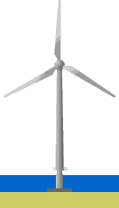

Offshore
Foundations: Gravitation + Steel


 Most
of the existing offshore wind parks use gravitation foundations.
A new technology offers a similar method to that of the concrete
gravity caisson. Instead of armed concrete it uses a cylindrical
steel tube placed on a flat steel box on the sea bed.
Most
of the existing offshore wind parks use gravitation foundations.
A new technology offers a similar method to that of the concrete
gravity caisson. Instead of armed concrete it uses a cylindrical
steel tube placed on a flat steel box on the sea bed.
Weight
Considerations
A steel gravity foundation is considerably lighter than concrete
foundations. Although the finished foundation has to have a weight
of around 1,000 tonnes, the steel structure will only weigh some
80 to 100 tonnes for water depths between 4 and 10 m. (Another
10 tonnes have to be added for structures in the Baltic Sea,
which require pack ice protection).
 The relatively low weight allows barges to
transport and install many foundations rapidly, using the same
fairly lightweight crane used for the erection of the turbines.
The relatively low weight allows barges to
transport and install many foundations rapidly, using the same
fairly lightweight crane used for the erection of the turbines.
 The gravity foundations are filled with olivine,
a very dense mineral, which gives the foundations sufficient
weight to withstand waves and ice pressure.
The gravity foundations are filled with olivine,
a very dense mineral, which gives the foundations sufficient
weight to withstand waves and ice pressure.
Size
Considerations
The base of a foundation of this type will be 14 by 14 m (or
a diameter of 15 m for a circular base) for water depths from
4 to 10 m. (Calculation based on a wind turbine with a rotor
diameter of 65 m).
Seabed
Preparation
The advantage of the steel caisson solution is that the foundation
can be made onshore, and may be used on all types of seabed although
seabed preparations are required. Silt has to be removed and
a smooth horizontal bed of shingles has to be prepared by divers
before the foundation can be placed on the site.
Erosion
Protection
The seabed around the base of the foundation will normally have
to be protected against erosion by placing boulders or rocks
around the edges of the base. This is, of course, also the case
for the concrete version of the gravitation foundation. This
makes the foundation type relatively costlier in areas with significant
erosion.
Costs
by Water Depth for Steel Gravitational Foundations

 The cost
penalty of moving to larger water depths is minimal compared
to traditional concrete foundations. The reason is, that the
foundation base does not have to increase in size proportion
to the water depth to lean against ice pressure or waves.
The cost
penalty of moving to larger water depths is minimal compared
to traditional concrete foundations. The reason is, that the
foundation base does not have to increase in size proportion
to the water depth to lean against ice pressure or waves.
 The cost estimates for this type of foundation
is for instance 2,343,000 DKK (= 335,000 USD) for a 1.5 MW machine
placed at 8 m water depth in the Baltic Sea (1997 figures). The
costs include installation.
The cost estimates for this type of foundation
is for instance 2,343,000 DKK (= 335,000 USD) for a 1.5 MW machine
placed at 8 m water depth in the Baltic Sea (1997 figures). The
costs include installation.
 The graph shows how the cost varies with
water depth. Interestingly, the dimensioning factor (which decides
the required strength and weight of the foundation) is not the
turbine itself but ice and wave pressure forces.
The graph shows how the cost varies with
water depth. Interestingly, the dimensioning factor (which decides
the required strength and weight of the foundation) is not the
turbine itself but ice and wave pressure forces.
© Copyright 1998 Soren Krohn. All rights reserved.
Updated 19 January 2001
http://www.wind power.dk/tour/rd/gravitat.htm